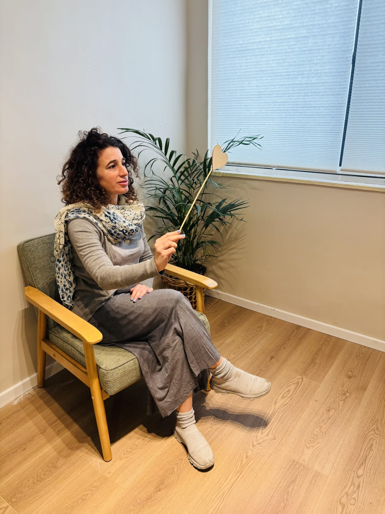

עוצמת הרכות
הגוף שלנו אוגר בתוכו זיכרונות ורגשות. כאב, מתח או כל תחושה פיזית הם הדרך של הגוף לדבר איתנו ולהזמין אותנו להקשיב פנימה, לרגשות שלנו. טיפול בעוצמת הרכות משלב שיחה ונענוע בטכניקה הנקראת "הפעמה".".

פסיכולוגיה יהודית על פי הבעל שם טוב
השיטה מבוססת על תורת המראות של הבעל שם טוב לפיה המציאות שלנו היא השתקפות של העולם הפנימי שלנו, וכל קושי ומכאוב שמופיע בחיינו, נועד לגדל ולהצמיח אותנו וטמונה בו מתנה עבורנו.

תרפיה בתנועות עיניים (EMID)
הרבה דפוסים והרגלים מוטמעים ונרשמים בגוף שלנו בעקבות חוויות העבר, ולכן שינוי הרגלים או דפוסים הוא תהליך מורכב, ולפעמים אפילו בלתי אפשרי, גם כאשר אנו מודעים אליהם. באמצעות תנועות עיניים נציף את הזיכרון ונקודד אותו מחדש במוח. הזיכרון יישאר אבל הדפוס כבר לא יפעיל אותנו רגשית